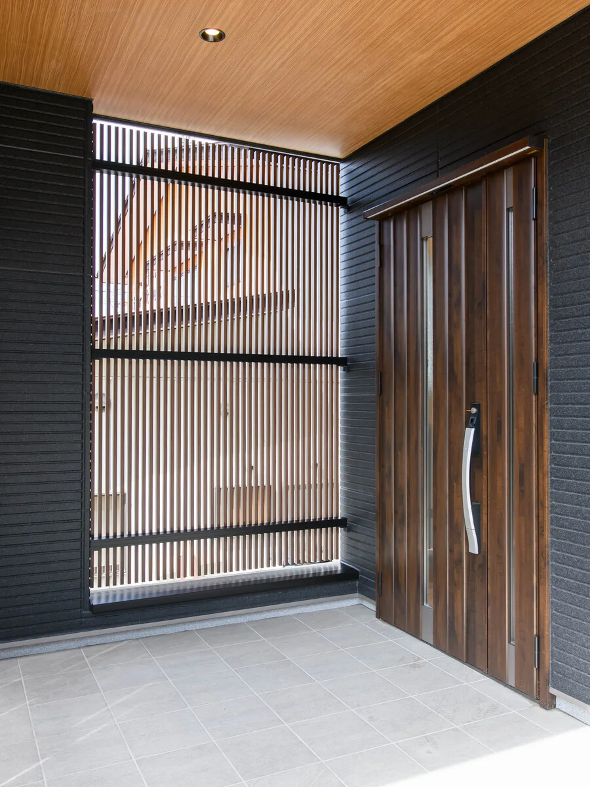
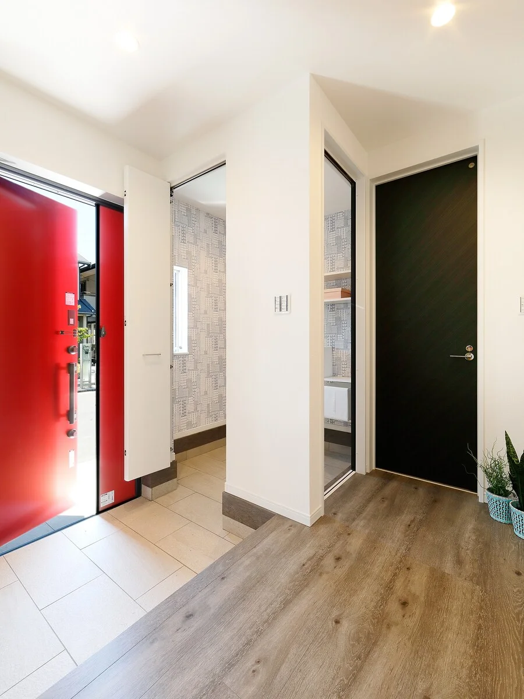

花Hana
天井を高くとり、設備を整えた家
玄関ドアは顔認証で開きます。軒天にはニチハの木目12mmを使い、窓はワイドサッシです。もう少し広くしたいときは、1坪あたり64万円で増やせます。
- 延床31坪
- 1階天井高2,500mm
- 玄関親子ドア
2,680万円コミコミ価格・税込
耐震と制震、アクアフォームLITEの断熱、ヘーベルパワーボードの外壁、ニスクカラーProの屋根。ここまでは三つとも同じです。違うのは広さと、設備と性能のどちらに費用をかけるかです。

花Hana
天井を高くとり、設備を整えた家
玄関ドアは顔認証で開きます。軒天にはニチハの木目12mmを使い、窓はワイドサッシです。もう少し広くしたいときは、1坪あたり64万円で増やせます。
2,680万円コミコミ価格・税込


京Miyako
限られた敷地のために設計した家
奈良のように広く土地を使えない場所でも建てられるよう、28坪3LDKにまとめています。もう少し広くしたいときは、1坪あたり68万円で増やせます。
2,480万円コミコミ価格・税込


風Kaze
長く住むための性能を備えた家
3帖のベランダと電動シャッターが標準です。防犯ガラスは掃き出し窓2か所と腰窓2か所に入ります。もう少し広くしたいときは、1坪あたり68万円で増やせます。
2,680万円コミコミ価格・税込
三つの仕様は、坪数・間取り・標準装備まで一覧でくらべられます。
花・風・京をくらべる →